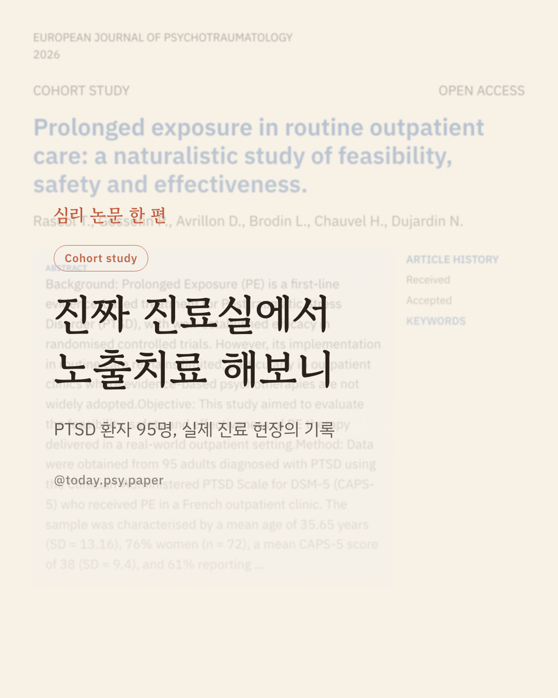
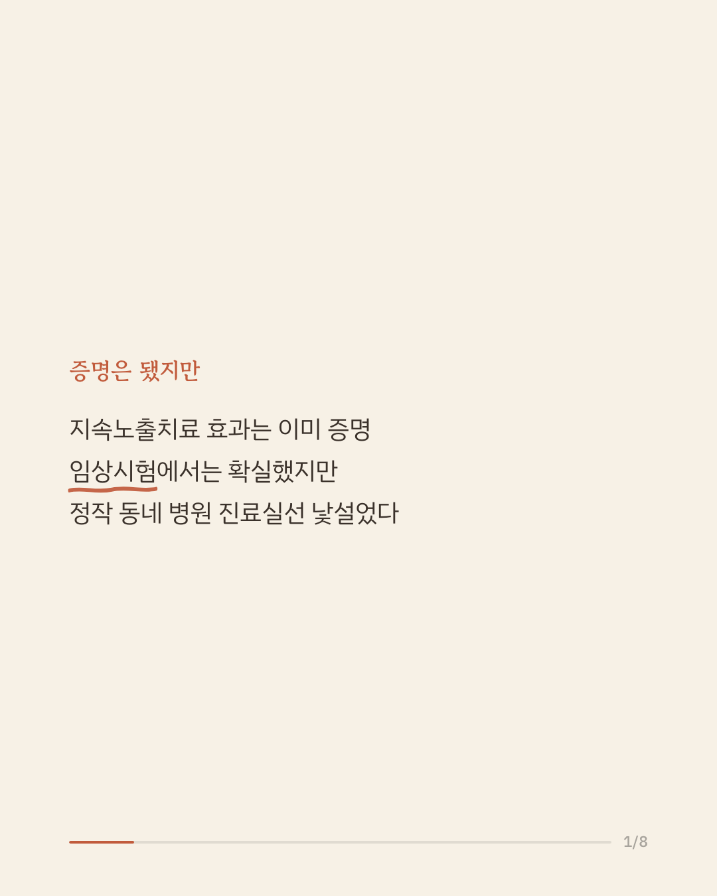
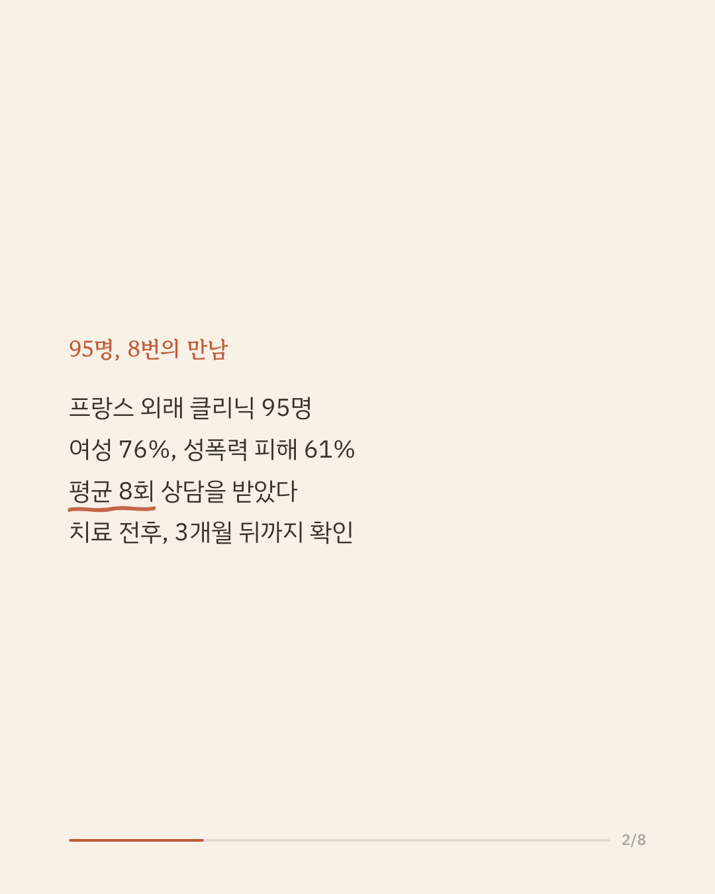
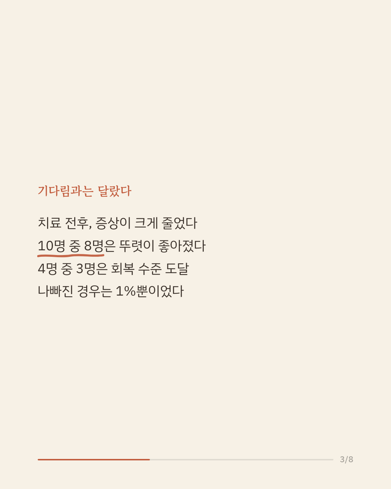
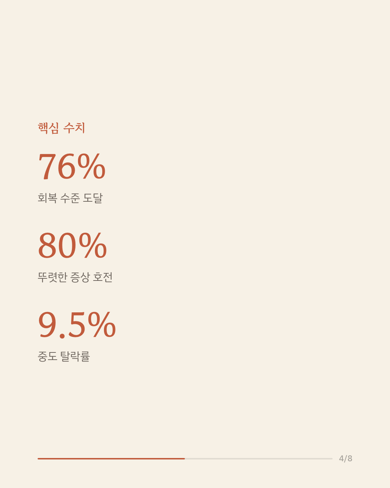
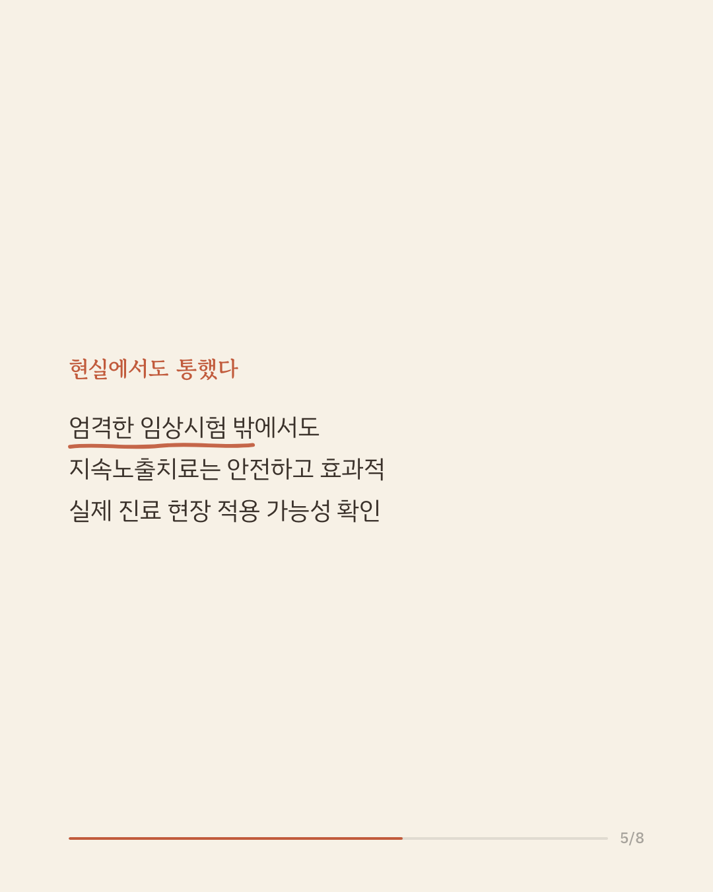
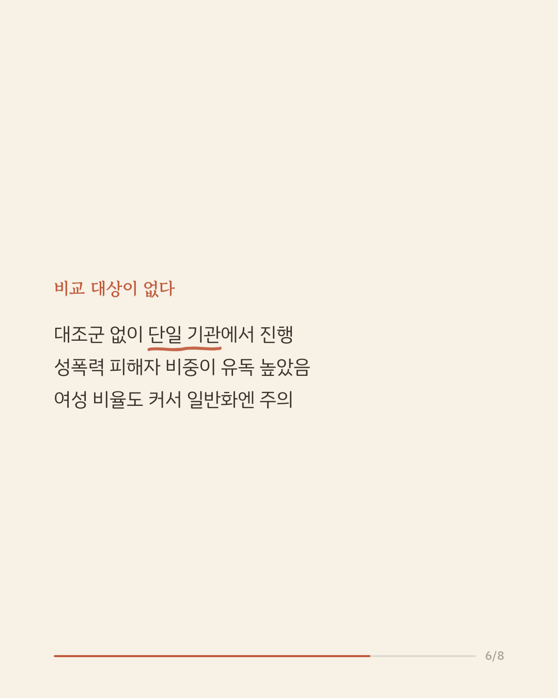
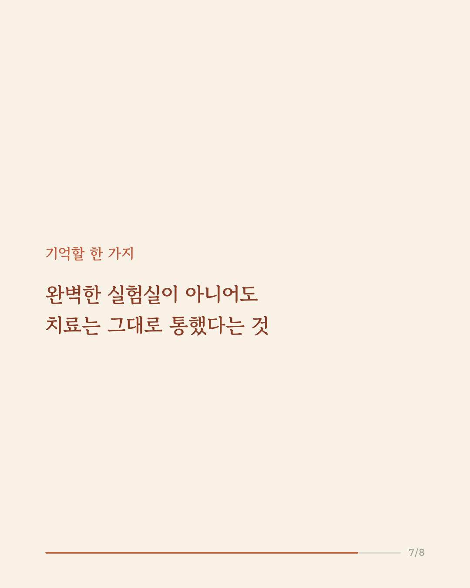
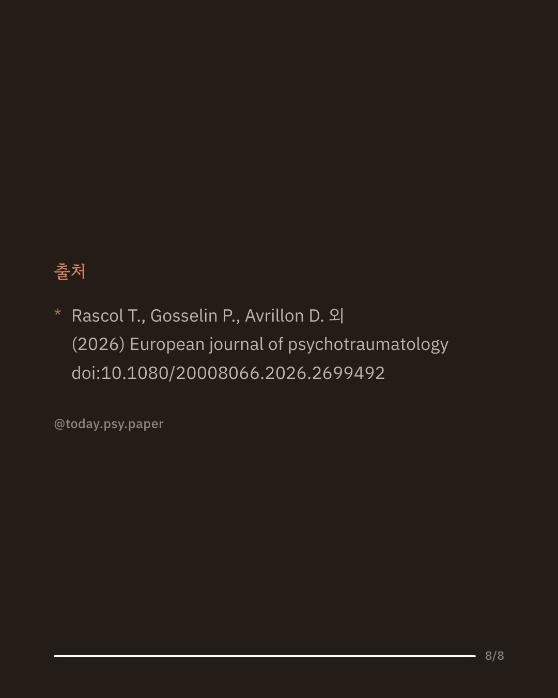

지속노출치료는 외상 후 스트레스 장애(PTSD) 치료법 중에서도 효과가 가장 탄탄하게 증명된 치료법입니다. 하지만 엄격하게 통제된 임상시험 밖, 실제 동네 병원 진료실에서도 이 치료가 통할지는 확실치 않았습니다. 프랑스의 한 외래 클리닉에서 PTSD 진단을 받은 성인 95명을 대상으로 지속노출치료를 시행하고 그 결과를 살펴봤습니다. 참가자의 76%가 여성이었고, 61%는 성폭력을 계기로 PTSD가 시작된 경우였습니다. 평균 8회 정도의 상담을 받았습니다. 치료 전후로 증상이 크게 줄었고, 3개월 뒤까지도 효과가 유지됐습니다. 참가자의 약 76%가 회복 수준에 도달했고, 80%가 임상적으로 뚜렷한 호전을 보였습니다. 반대로 증상이 악화된 경우는 1%에 그쳤습니다. 통제된 실험 환경이 아니어도 치료 효과가 이어질 수 있다는 것을 보여주는 결과입니다. 다만 대조군 없이 단일 기관에서 진행된 연구이고, 성폭력 피해자와 여성의 비중이 유독 높아 다른 집단에 그대로 적용하기는 조심스럽습니다. 출처: European Journal of Psychotraumatology (2026), 'Prolonged exposure in routine outpatient care: a naturalistic study of feasibility, safety and effectiveness' #임상심리 #정신건강정보 #심리치료 #외상후스트레스 #논문리뷰
python3 publish.py 42766476